埋下一枚坐标~
OCR 识别提示（待核对）
- OCR 自动识别文字，尚未逐字校对；可能错字、漏字、漏行，数字、姓名、标点及断行也可能有误，请以截图为准。
- 这里只保留 PDF 已截到的正文、留言和作者回复；截图以外的留言不在此存档中。
- 未从截图推断留言总数或回复关系；手机界面文字也可能混入 OCR。
- 低置信标记仅为机器提示，并不表示未标记的文字已经准确。
识别工具：tesseract 5.5.0 · tesseract-ocr/tessdata_best chi_sim。识别器置信度仅用于提示核对，不是文字准确率。
第 1 页 · 原始截图
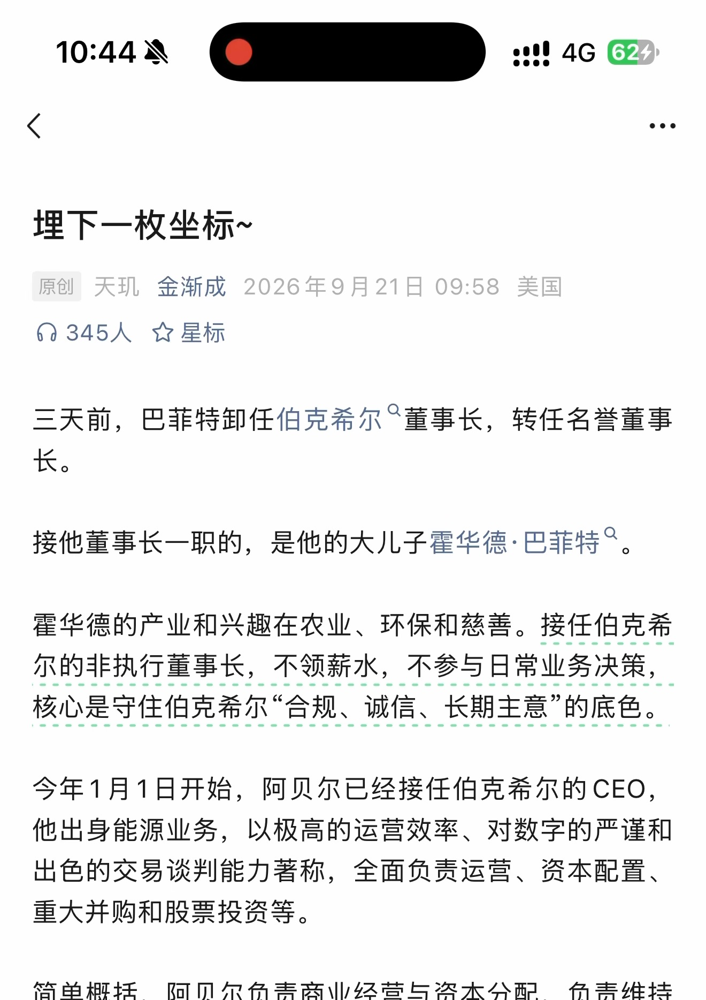
查看本页自动识别文字（OCR待核对） · 23 处低置信度提示
以下为未经逐字核对的自动识别结果，请以上方原图为准。
识别器标记 23 处低置信度，请对照截图核对
这些是识别器的风险提示，并不等于已确认的错误。
- oo》
- 埋下一枚坐标 ~
- 原创天现金渐成 2026 年 9 月 21 日 09:58 美国
- 们 345 人空星标
- 三天前， 巴菲特卸任伯克希尔 “ 董事长， 转任名誉董事
- 接他董事长一职的， 是他的大儿子霍华德巴菲特”。
- 霍华德的产业和兴趣在农业、 环保和慈善。 接任伯克和希
- 核心是守住伯克希尔 “ 合规、 诚信、 长期主意的底色。
- 今年 1 月 1 日开始， 阿贝尔已经接任伯克希尔的 CEO，
- 出色的交易谈判能力著称， 全面负责运营、 资本配置、
第 2 页 · 原始截图
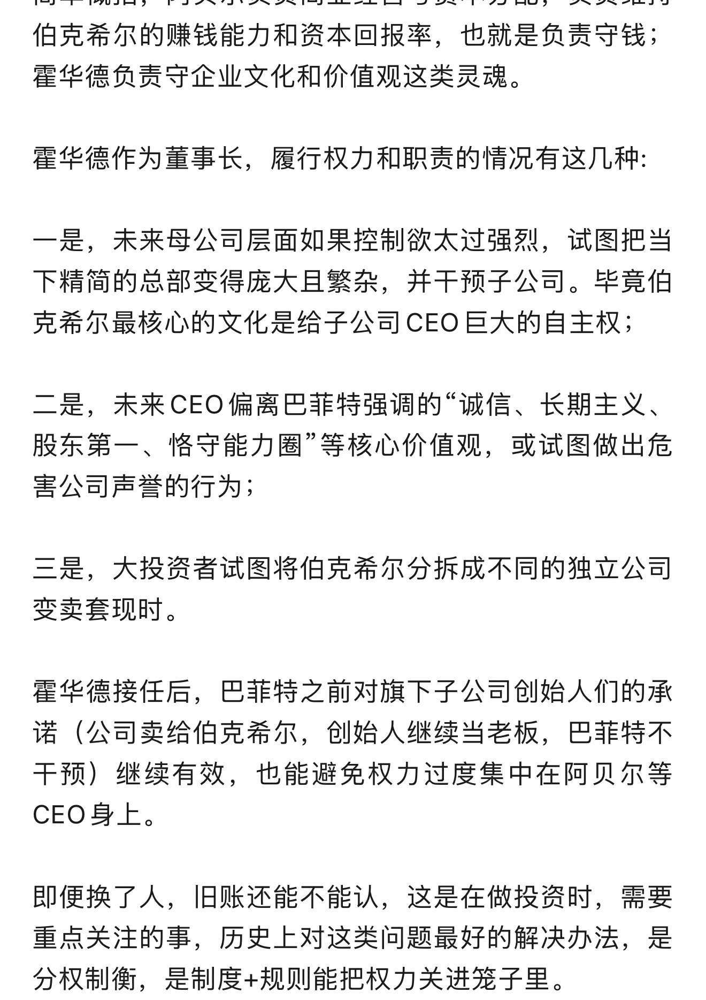
查看本页自动识别文字（OCR待核对） · 21 处低置信度提示
以下为未经逐字核对的自动识别结果，请以上方原图为准。
识别器标记 21 处低置信度，请对照截图核对
这些是识别器的风险提示，并不等于已确认的错误。
- 伯克希尔的赚钱能力和资本回报率， 也就是负责守钱 ;
- 霍华德负责守企业文化和价值观这类灵魂。
- 霍华德作为董事长， 履行权力和职责的情况有这几种 :
- 一是， 未来母公司层面如果控制欲太过强烈， 试图把当
- 下精简的总部变得庞大且繁杂， 并干预子公司。 毕竟伯
- 克希尔最核心的文化是给子公司 CEO 巨大的自主权
- 二是， 未来 CEO 偏离巴菲特强调的 “诚信、 长期主义、
- 股东第一、 恪守能力圈 “等核心价值观， 或试图做出危
- 害公司声誉的行为 ;
- 三是， 大投资者试图将伯克希尔分拆成不同的独立公司
- 霍华德接任后， 巴菲特之前对旗下子公司创始人们的承
- 诺 (公司卖给伯克希尔， 创始人继续当老板， 巴菲特不
- 即便换了人， 旧账还能不能认， 这是在做投资时， 需要
第 3 页 · 原始截图
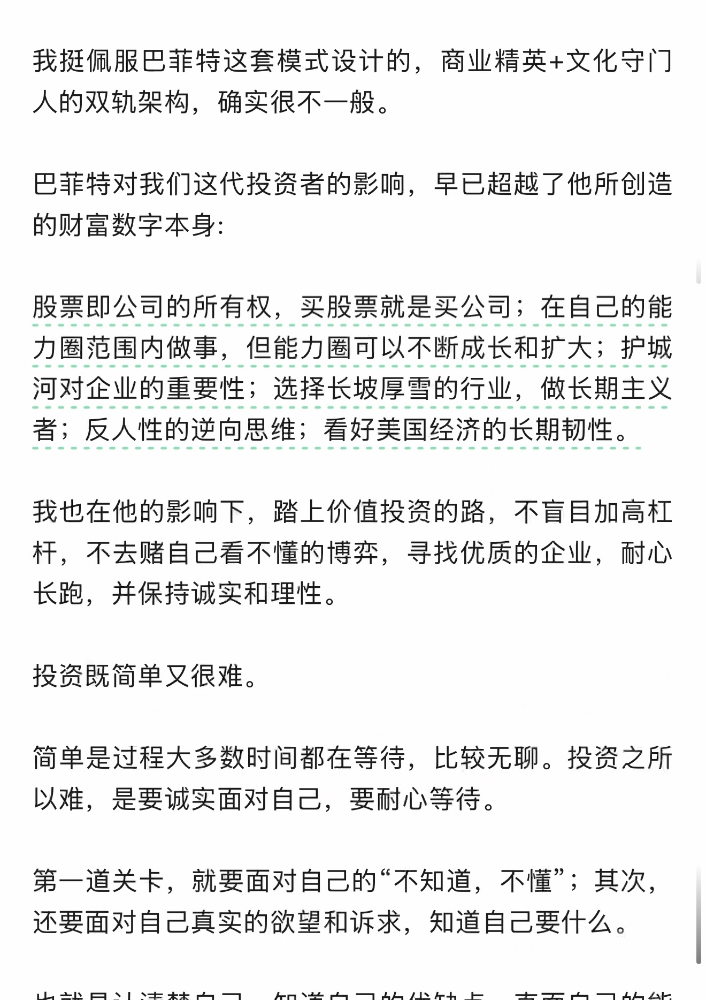
查看本页自动识别文字（OCR待核对） · 19 处低置信度提示
以下为未经逐字核对的自动识别结果，请以上方原图为准。
识别器标记 19 处低置信度，请对照截图核对
这些是识别器的风险提示，并不等于已确认的错误。
- 我挺佩服巴菲特这套模式设计的， 商业精英 + 文化守门
- 股票即公司的所有权， 买股票就是买公司 ; 在自己的能
- 河对企业的重要性 : 庄泽到设厚村的全， 做长期主义
- 我也在他的影响下， 踏上价值投资的路， 不言目加高杠
- 杆， 不去赌自己看不懂的博弈， 寻找优质的企业， 耐心
- 第一道关卡， 就要面对自己的 “不知道， 不懂 - ;其次，
第 4 页 · 原始截图
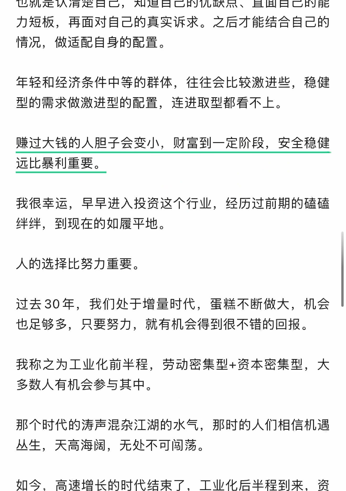
查看本页自动识别文字（OCR待核对） · 15 处低置信度提示
以下为未经逐字核对的自动识别结果，请以上方原图为准。
识别器标记 15 处低置信度，请对照截图核对
这些是识别器的风险提示，并不等于已确认的错误。
- 情况， 做适配自身的配置。
- 我很幸运， 早早进入投资这个行业， 经历过前期的硅磋
- 绊绊， 到现在的如履平地。
- 过去 30 年， 我们处于增量时代， 蛋糕不断做大， 机会
- 也足够多， 只要努力， 就有机会得到很不错的回报。
- 我称乙为工业化前半程， 劳动密集型 + 资本密集型， 大
- 那个时代的涛声混杂江湖的水气， 那时的人们相信机遇
- 丛生， 天高海阅， 无处不可效荡。
第 5 页 · 原始截图
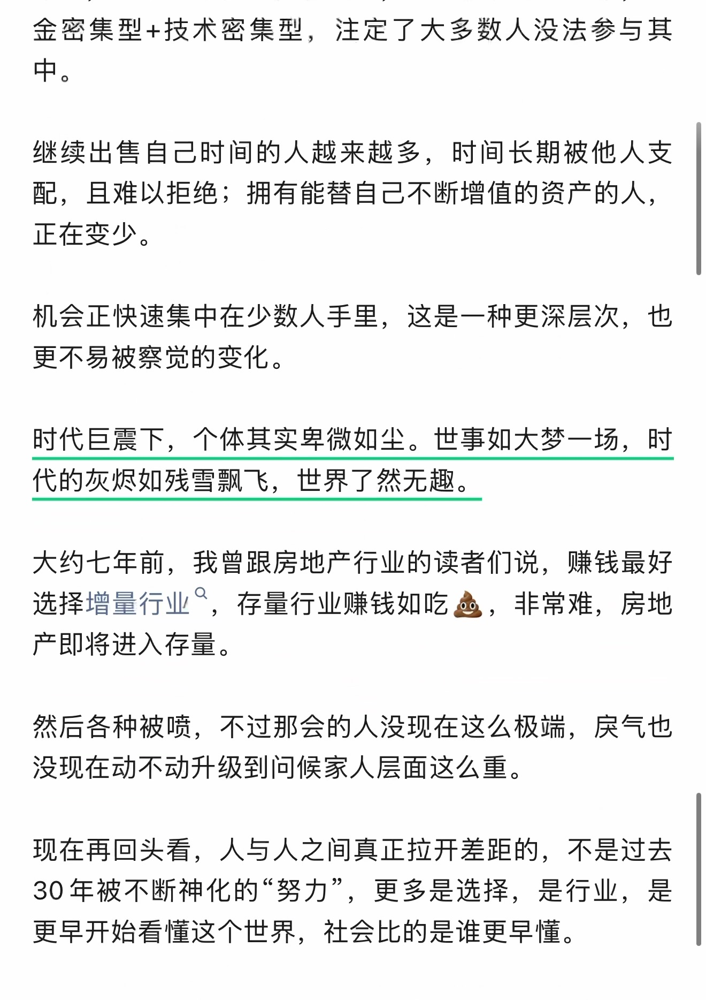
查看本页自动识别文字（OCR待核对） · 21 处低置信度提示
以下为未经逐字核对的自动识别结果，请以上方原图为准。
识别器标记 21 处低置信度，请对照截图核对
这些是识别器的风险提示，并不等于已确认的错误。
- 继续出售自己时间的人越来越多， 时间长期被他人支
- 配， 且难以拒绝， 拥有能蔡自己不断增值的资产的人，
- 机会正快速集中在少数人手里， 这是一种更深层次， 也
- 时代巨震下， 个体其实扯微如尘。 世事如大梦一场， 时
- 代的灰召如残雪球 《， 世界了然无趣。
- 大约七年前， 我曾跟房地产行业的读者们说， 赚钱最好
- 选择增量行业 “， 存量行业赚钱如吃盘， 非常难， 房地
- 然后各种被喷， 不过那会的人没现在这么极端， 康气也
- 30 年被不断神化的努力， 更多是选择， 是行业， 是
- 更早开始看懂这个世界， 社会比的是谁更早懂。
第 6 页 · 原始截图
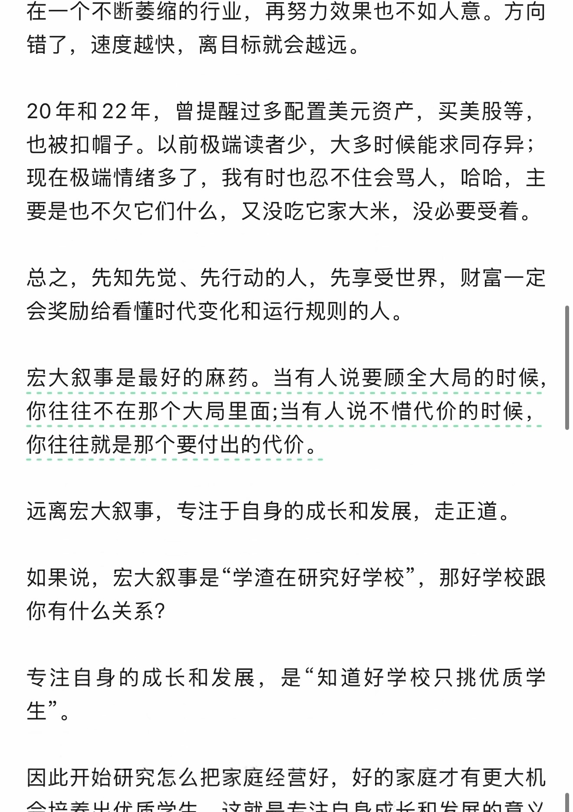
查看本页自动识别文字（OCR待核对） · 22 处低置信度提示
以下为未经逐字核对的自动识别结果，请以上方原图为准。
识别器标记 22 处低置信度，请对照截图核对
这些是识别器的风险提示，并不等于已确认的错误。
- 在一个不断萎缩的行业， 再努力效果也不如人意。 方向
- 错了， 速度越快， 离目标就会越远。
- 也被扣帽子。 以前极端读者少， 大多时候能求同存异 ;
- 现在极端情绪多了， 我有时也忍不住会加人， 哈哈， 主
- 宏大叙事是最好的麻药。 当有人说要顾全入局的时候，
- 如果说， 宏大叙事是 ”学渣在研究好学校， 那好学校跟
- 生 ”。
第 7 页 · 原始截图
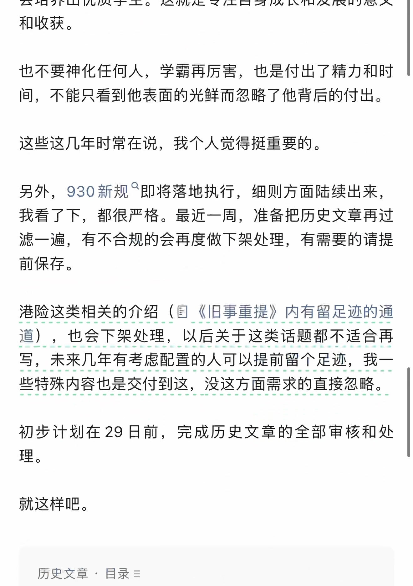
查看本页自动识别文字（OCR待核对） · 15 处低置信度提示
以下为未经逐字核对的自动识别结果，请以上方原图为准。
识别器标记 15 处低置信度，请对照截图核对
这些是识别器的风险提示，并不等于已确认的错误。
- 也不要神化任何人， 学霸再厉害， 也是付出了精力和时
- 间， 不能只看到他表面的光鲜而忽略了他背后的付出。
- 这些这几年时常在说， 我个人觉得挺重要的。
- 另外，930 新规 “ 即将落地执行， 细则方面陆续出来，
- 港险这类相关的介绍 (四 《旧事重提》 内有留足迹的通
- 写， 未来几年有考虑配置的人可以所前留个足迹 , 我一
- 历史文章， 目录 =
第 8 页 · 原始截图
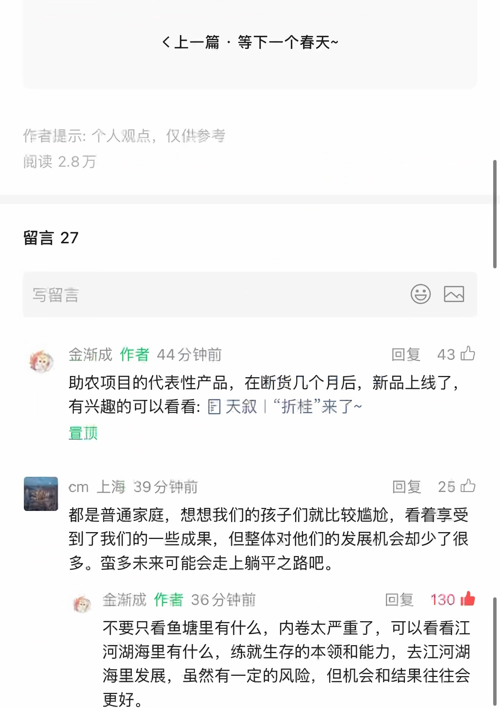
查看本页自动识别文字（OCR待核对） · 36 处低置信度提示
以下为未经逐字核对的自动识别结果，请以上方原图为准。
识别器标记 36 处低置信度，请对照截图核对
这些是识别器的风险提示，并不等于已确认的错误。
- 《上一篇等下一个春天 ~
- 作者提示 : 个人加点， 仪供参考
- 阁读 2.8 万
- 写留言 CD
- 金渐成作者 44 分钟前回复已
- 有兴趣的可以看看 : 图天叙 | 折桂 "来了 ~
- 置顶
- | cm 上海 39 分钟前回复 wm
- 都是普通家庭， 想想我们的孩子们就比较尴炊， 看着享受
- 到了我们的一些威果， 但整体对他们的发展机会却少了很
- 多。 诗多未来可能会走上躺平之路吧。
- 他 ”人金渐成作者 36 分钟前回复 130 由
- 不要只看鱼塘里有什么， 内卷太严重了， 可以看看江
- 河湖海里有什么， 练就生存的本领和能力， 去江河湖
第 9 页 · 原始截图
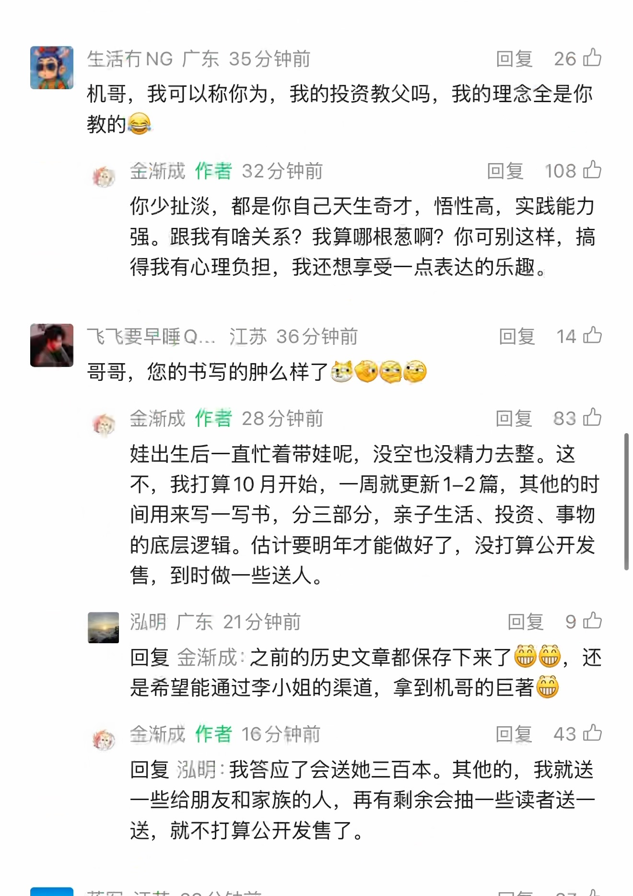
查看本页自动识别文字（OCR待核对） · 57 处低置信度提示
以下为未经逐字核对的自动识别结果，请以上方原图为准。
识别器标记 57 处低置信度，请对照截图核对
这些是识别器的风险提示，并不等于已确认的错误。
- 图生活有 NG 广东 35 分钟前回复 ”26 已
- 教的总
- 君 | 人金渐成作者 32 分钟前回复 108 四
- 你少扯淡， 都是你自己天生奇才， 司性高， 实践能力
- 强。 跟我有啥关系 ? 我算哪根葱啊 ? 你可别这样， 搞
- 得我有心理负担， 我还想享受一点表达的乐趣。
- 飞飞要早睡 Q..， 江苏 36 分钟前回复 14 办
- 哥哥， 您的书写的肿么样了登硬炙愉
- 合金渐成作者 28 分钟前回复 83 办
- 娃出生后一直忙着带娃呢， 没空也没精力去整。 这
- 不， 我打算 10 月开始， 一周就更新 1-2 篇， 其他的时
- 间用来写一写书， 分三部分， 末子生活、 投资、 事物
- 的底层逻辑。 估计要了明年才能做好了， 没打算公开发
- 涨明广东 21 分钟前回复 9 办
- 回复金渐成 : 之前的历史文章都保存下来了全贷 , 还
- 是希望能通过李小姐的渠道， 拿到机哥的巨著俩
- 鸭， 金新成作者 16 分钟前回复 43 内
- 回复泓明 :我答应了会送她三百本。 其他的， 我就送
- 一些给朋友和家族的人， 再有剩余会抽一些读者送一
第 10 页 · 原始截图
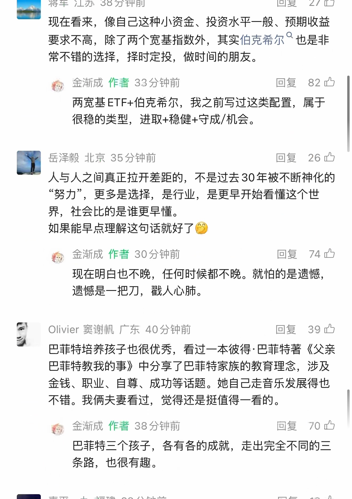
查看本页自动识别文字（OCR待核对） · 48 处低置信度提示
以下为未经逐字核对的自动识别结果，请以上方原图为准。
识别器标记 48 处低置信度，请对照截图核对
这些是识别器的风险提示，并不等于已确认的错误。
- | 浆军江苏 38 分钟前回复 ”27 四
- 愉
- 要求不高， 除了两个宽基指数外， 其实伯克希尔 ” 也是非
- 稚， 金渐成作者 33 分钟前回复 82 内
- 两宽基 ETF+ 伯克希尔， 我之前写过这类配置， 属于
- 岳泽地北京 35 分钟前回复 26 办
- “努力 ”， 更多是选择， 是行业， 是更早开始看懂这个世
- 如果能早点理解这句话就好了例
- 准， 金渐成作者 30 分钟前回复 74 中
- 现在明白也不晚， 任何时候都不晚。 就怕的是遗憾，
- 遗憾是一把刀， 戳人心肺。
- Olivier 赛谢帆广东 40 分钟前回复 ”39 忠
- 巴菲特培养孩子也很优秀， 看过一本彼得 :巴菲特著 《父亲
- 不错。 我俩夫妻看过， 觉得还是插值得一看的。
- 入全渐成作者 38 分钟前回复 70 四
- 巴菲特三个孩子， 各有各的成就， 走出完全不同的二
第 11 页 · 原始截图
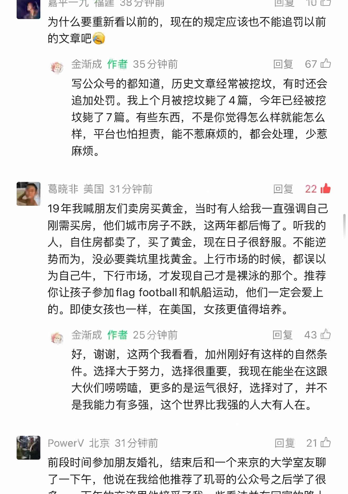
查看本页自动识别文字（OCR待核对） · 46 处低置信度提示
以下为未经逐字核对的自动识别结果，请以上方原图为准。
识别器标记 46 处低置信度，请对照截图核对
这些是识别器的风险提示，并不等于已确认的错误。
- 嘉平一九福建 38 分钟前回复 10 吃
- 为什么要重新看以前的， 现在的规定应该也不能追罚以前
- 的文章吧虹
- 符， 金渐成作者 35 分钟前回复 ”67 只
- 写公众号的都知道， 历史文章经常被挖坟， 有时还会
- 追加处罚。 我上个月被挖坟丝了 4 篇， 今年已经被控
- 坟比了 7 篇。 有些东西， 不是你觉得怎么样就能怎么
- 样， 平台也怕担责， 能不惹麻烦的， 都会处理， 少若
- 葛晓非美国 31 分钟前回复 ”22 直
- 19 年我喊朋友们卖房买黄金， 当时有人给我一直强调自己
- 刚需买房， 他们城市房子不跌， 这两年都后悔了。 听我的
- 人， 自住房都卖了， 买了黄金， 现在日子很舒服。 不能逆
- 势而为， 没必要养坑里找黄金。 上行市场的时候， 都误以
- 你让孩子参加 flag football 和帆船运动， 他们一定会爱上
- 将金渐成作者 25 分钟前回复 43 只
- 件。 选择大于努力， 选择很重要， 我现在能坐在这跟
- 大伙们嘴踪嘻， 更多的是运气很好， 选择对了， 并不
- Powerv 北京 31 分钟前回复已
- 前段时间参加朋友婚礼， 结束后和一个来京的大学室友聊
- 了一下午， 他说在我给他推荐了现哥的公众号之后学了很
第 12 页 · 原始截图
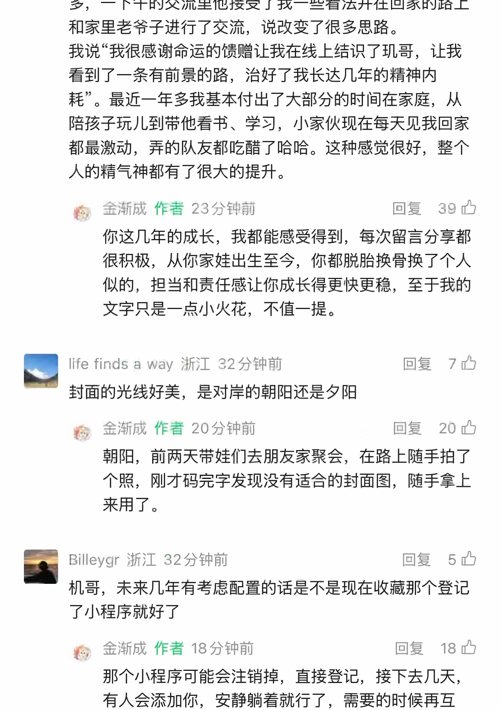
查看本页自动识别文字（OCR待核对） · 28 处低置信度提示
以下为未经逐字核对的自动识别结果，请以上方原图为准。
识别器标记 28 处低置信度，请对照截图核对
这些是识别器的风险提示，并不等于已确认的错误。
- 和家里老分子进行了交流， 说改变了很多思路。
- 我说 “我很感谢命运的馈赠让我在线上结识了现哥， 让我
- 耗 "。 最近一年多我基本付出了大部分的时间在家庭， 从
- 都最激动， 弄的队友都吃醋了哈哈。 这种感觉很好， 整个
- 二人金渐成作者 23 分钟前回复 39 办
- 很积极， 从你家娃出生至今， 你都脱胎换骨换了个人
- 四 life finds a way 浙江 32 分钟前回复 7 让
- 次全渐成作者 20 分钟前回复 ”20 轿
- 朝阳， 前两天带娃们去朋友家聚会， 在路上随手拍了
- 国 Billeygr 浙江 32 分钟前回复 5 只
- 准人金渐成作者 18 分钟前回复 18 办
第 13 页 · 原始截图
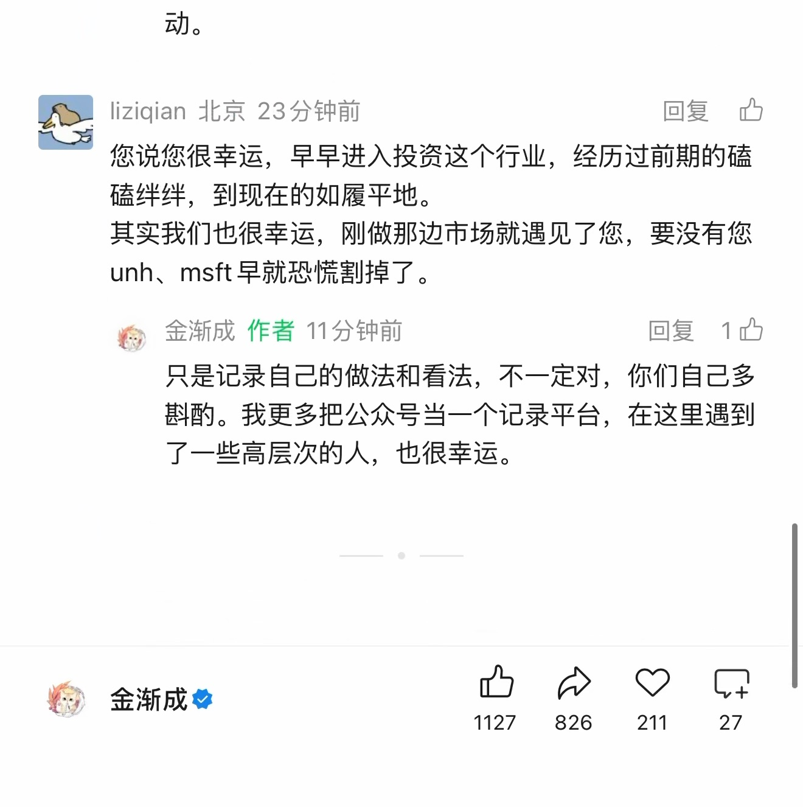
查看本页自动识别文字（OCR待核对） · 18 处低置信度提示
以下为未经逐字核对的自动识别结果，请以上方原图为准。
识别器标记 18 处低置信度，请对照截图核对
这些是识别器的风险提示，并不等于已确认的错误。
- -六 iiziqian 北京 23 分钟前回复 ”中
- 了您说您很幸运， 早早进入投资这个行业， 经历过前期的夺
- 石绊绊， 到现在的如履平地。
- unh、msft 早就恐恢割掉了。
- 蕉人金渐成作者 1 分钟前回复 1 办
- 奏酌。 我更多把公众号当一个记录平台， 在这里遇到
- 每金渐成如
按日期浏览全部来源（同日按条目标识排序）
回到页首 ↑